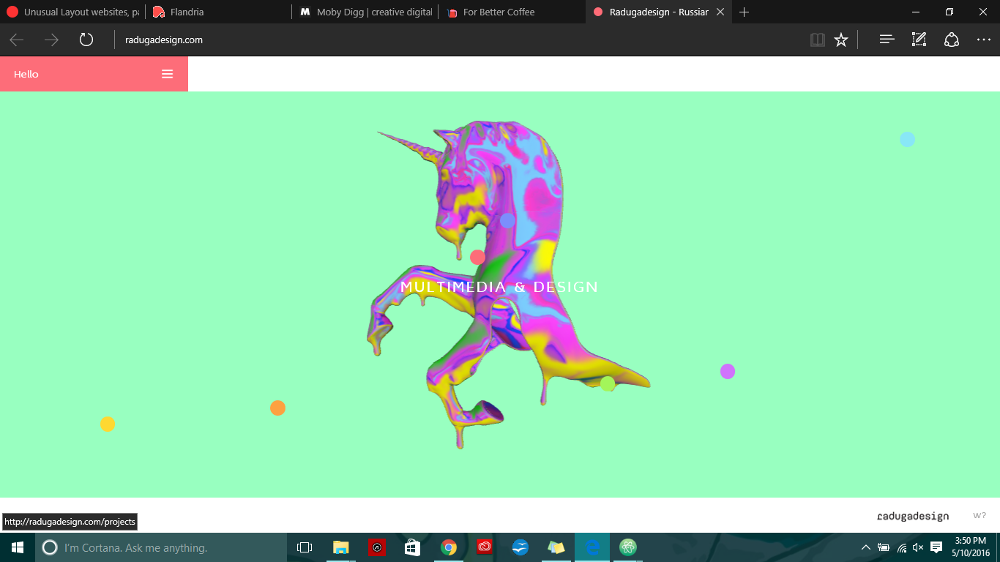

Design work is good. Here's a unicorn.
Home What struck me as most interesting in this site was the Home page. When the site loaded, I came upon a screen with a psychedelically colored unicorn. When I tried to find the mouse cursor by moving it, it moved the unicorn instead. Conclusion: this site was programmed to be highly interactive.
Raduga Link